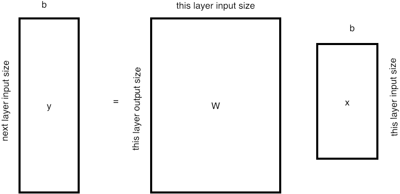
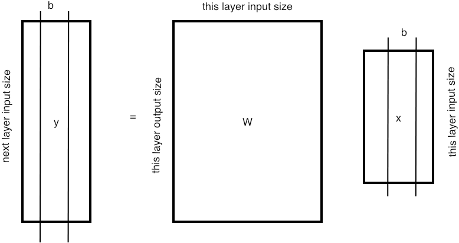

ML is a collective name for a number of techniques that approach problems we might consider `intelligent', such as image recognition. In the abstract, such problems are mappings from a vector space of feature s, such as pixel values in an image, to another vector space of outcomes. In the case of image recognition of letters, this final space could be 26-dimensional, and a maximum value in the second component would indicate that a `B' was recognized.
The essential characteristic of ML techniques is that this mapping is described by a --~usually large~-- number of internal parameters, and that these parameters are gradually refined. The learning aspect here is that refining the parameters happens by comparing an input to both its predicted output based on current parameters, and the intended output.
crumb trail: > learning > Neural networks
The most popular form of ML these days is DL , or neural networks . A~neural net, or a deep learning network, is a function that computes a numerical output, given a (typically multi-dimensional) input point. Assuming that this output is normalized to the interval~$[0,1]$, we can use a neural net as a classification tool by introducing a threshold on the output.
Why `neural'?
A neuron, in a living body, is a cell that `fires', that is, gives off a voltage spike, if it receives certain inputs. In ML we abstract this to a perceptron : a~function that outputs a value depending on certain inputs. To be specific, the output value is often a linear function of the inputs, with the result limited to the range~$(0,1)$.
crumb trail: > learning > Neural networks > Single datapoint
In its simplest form we have an input, characterized by a vector of feature~s $\bar x$, and a scalar output~$y$. We can compute $y$ as a linear function of~$\bar x$ by using a vector of weights of the same size, and a scalar bias ~$b$: \[ y = \bar w \bar x +b. \]
crumb trail: > learning > Neural networks > Activation functions
To have some scale invariance, we introduce a function~$\sigma$ known as the activation function that maps $\bbR\rightarrow(0,1)$, and we actually compute the scalar output~$y$ as:
\bbR\owns y = \sigma( \bar w^t\bar x+b ). \end{equation}One popular choice for a sigmoid function is \[ \sigma(z) = \frac{1}{1+e^{-z}}. \] This has the interesting property that \[ \sigma'(x) = \sigma(x)(1-\sigma(x)) \] so computing both the function value and the derivative is not much more expensive than computing only the function value.
For vector-valued outputs we apply the sigmoid function in a pointwise manner:
// funcs.cpp
template <typename V>
void sigmoid_io(const V &m, V &a) {
a.vals.assign(m.vals.begin(),m.vals.end());
for (int i = 0; i < m.r * m.c; i++) {
// a.vals[i]*=(a.vals[i]>0); // values will be 0 if negative, and equal to themselves if positive
a.vals[i] = 1 / (1 + exp(-a.vals[i]));
}
}
Other activation functions are $y=\tanh(x)$ or `ReLU' (Rectified Linear Unit) \[ f(x) = \max(0,x). \] In other places (such as the final layer of a DL network) a softmax function may be more appropriate.
crumb trail: > learning > Neural networks > Multi-dimensional output
It is rare that a single layer, defined by $\bar w,\bar b$ can achieve all that we ask of a neural net. Typically we use the output of one layer as the input for a next layer. This means that instead of a scalar $y$ we compute a multi-dimensional vector $\bar y$.
Now we have weights and a bias for each component of the output, so \[ \bbR^n\owns \bar y = \sigma( W\bar x + \bar b ) \] where $W$ is now a matrix.
A few observations:
crumb trail: > learning > Neural networks > Convolutions
The above discussion of applying weights considered the inputs as a set of features without further structure. However, in applications such as image recognition, where the input vector is an image, there is a structure to be acknowledged. Linearizing the input vector puts pixels close together in the input vector if they are close horizontally, but not vertically.
Thus we are motivated to find a weights matrix that reflects this locality. We do this by introducing kernels : a small `stencil' that is applied at various points of the image. (See section 4.2.4 for a discussion of stencils in the context of PDEs .) Such a kernel is typically a small square matrix, and applying it is done by taking the inner product of the stencil values and the image values. (This is an inexact use of the term convolution from signal processing.)
Examples: https://aishack.in/tutorials/image-convolution-examples/ .
crumb trail: > learning > Deep learning networks
We will now present a full neural network. This presentation follows [Higham:sirevDL] .
Use a network with $L \geq 1$ layers, where layer $\ell=1$ is the input layer, and layer $\ell=L$ is the output layer.
\newcommand\supell{^{(\ell)}} \newcommand\supellp{^{(\ell+1)}} \newcommand\supellm{^{(\ell-1)}} \newcommand\calN{{\cal N}}
For $\ell=1,…,L$, layer $\ell$ compute
\begin{array}{rl} z\supell &=W\supell a\supell + b\supell \\ y\supell &= \sigma\bigl( y\supell \bigr) \\ \end{array} \end{equation}where $a^{(1)}$ is the input and $z^{(L+1)}$ is the final output.
We write this compactly as
y^{(L)} = {\cal N\_{ \{W\supell\}\_\ell,\{ b\supell \}\_ell }}\bigl( a^{(1)} \bigr) \end{equation}where we will usually omit the dependence of the net on the $W\supell,b\supell$ sets.
// net.cpp
void Net::feedForward(const VectorBatch &input) {
this->layers.front().forward(input); // Forwarding the input
for (unsigned i = 1; i < layers.size(); i++) {
this->layers.at(i).forward(this->layers.at(i - 1).activated_batch);
}
}
// layer.cpp
void Layer::forward(const VectorBatch &prevVals) {
VectorBatch output( prevVals.r, weights.c, 0 );
prevVals.v2mp( weights, output );
output.addh(biases); // Add the bias
activated_batch = output;
apply_activation<VectorBatch>.at(activation)(output, activated_batch);
}
crumb trail: > learning > Deep learning networks > Classification
In the above description both the input $x$ and output $y$ are vector-valued. There are also cases where a different type of output is desired. For instance, suppose we want to characterize bitmap images of digits; in that case the output should be an integer $0\cdots 9$.
We accomodate this by letting the output $y$ be in $\bbR^{10}$, and we say that the network recognizes the digit 5 if $y_5$ is sufficiently larger than the other output components. In this manner we keep the whole story still real-valued.
crumb trail: > learning > Deep learning networks > Error minimization
Often we have data points $\{x_i\}_{i=1,N}$ with known outputs $y_i$, and we want to make the network predict reproduce this mapping as well as possible. Formally, we seek to minimize the cost, or error: \[ C=\frac{1}{N} L(\calN(x_i),y_i) \] over all choices ${ \{W\},\{b\} }$. (Usually we do not spell out explicitly that this cost is a function of all $W^{[\ell]}$ weight matrices and $b^{[\ell]}$ biases.)
float Net::calculateLoss(Dataset &testSplit) {
testSplit.stack();
feedForward(testSplit.dataBatch);
const VectorBatch &result = output_mat();
float loss = 0.0;
for (int vec=0; vec<result.batch_size(); vec++) { // iterate over all items
const auto& one_result = result.get_vector(vec);
const auto& one_label = testSplit.labelBatch.get_vector(vec);
assert( one_result.size()==one_label.size() );
for (int i=0; i<one_result.size(); i++) // Calculate loss of result
loss += lossFunction( one_label[i], one_result[i] );
}
loss = -loss / (float) result.batch_size();
return loss;
}
Minimizing the cost means to choose weights $\{W\supell\}_\ell$ and biases $\{b\supell\}_\ell$ such that for each $x$:
\left[ \{W\supell\}\_\ell,\{b\supell\}\_\ell \right] = \argmin\_{ \{W\},\{b\} } L ( \calN \_{ \{W\},\{b\} }( x ),y ) \end{equation}where $L(\calN (x),y)$ is a loss function describing the distance between the computed output $\calN (x)$ and the intended output $y$.
We find this minimum using gradient descent : \[ w\leftarrow w+\Delta w, \qquad b\leftarrow b+\Delta b \] where \[ \Delta W = \frac{\partial L}{\partial W\supell_{ij}} \] which is a complicated expression that we will now give without derivation.
crumb trail: > learning > Deep learning networks > Coefficients computation
We are interested in partial derivatives of the cost wrt the various weights, biases, and computed quantities. For this it's convenient to introduce a short-hand:
\delta^{[\ell]}\_i = \frac{ \partial C}{\partial z^{[\ell]}\_i} \qquad \hbox{for $1\leq i\leq n\_\ell$ and $1\leq \ell< L$}. \end{equation}Now applying the chain rule (for full derivation see the paper quoted above) we get, using $x\circ y$ for the pointwise (or Hadamard ) vector-vector product $\{ x_iy_i \}$:
Using the special form \[ \sigma(x)=\frac{1}{1+e^{-x}} \] gives \[ \sigma'(x) = \sigma(x)(1-\sigma(x)). \]
crumb trail: > learning > Deep learning networks > Algorithm
\def\header#1{\multicolumn{3}{l}{ \kern-20pt \hbox{#1}}}
\begin{array}{lll} \header{Input layer $\ell=1$ starts with:}\\ a\supell=x&\textrm{network input}&n\_{ell}\times b\\ %\multicolumn{3}{l}{ \hbox{For layers $\ell=1,…,L$} }\\ \header{For layers $\ell=1,…,L$}\\ a\supell&\textrm{layer input}&n\_\ell\times b\\ W\supell&\textrm{weights}&n\_{\ell+1}\times n\_\ell\\ b\supell&\textrm{biases}&n\_{\ell+1}\times b\\ z\supell \leftarrow W\supell a\supell + b\supell &\textrm{biased product}&n\_{\ell+1}\times b\\ a\supellp=y\supell\leftarrow \sigma\bigl( z\supell \bigr) &\textrm{activated product}&n\_{\ell+1}\times b\\ \header{The final output:}\\ %\multicolumn{3}{l}{ \hbox{The final output:} }\\ y=a^{(L+1)}=z^{(L)}&&n\_{L+1}\times b\\ \header{For layers $\ell=L,L-1,…,1$}\\ %\multicolumn{3}{l}{ \hbox{For layers $\ell=L,L-1,…,1$} }\\ D\supellp \leftarrow \diag\bigl( \sigma'(z\supell) \bigr) &&n\_{\ell+1}\times n\_{\ell+1}\\ \delta\supell \leftarrow \begin{cases} D^{L+1}\bigl( a^{L+1}-y \bigr)\\ D\supellp {W\supellp}^t \delta\supellp&\ell<L \end{cases} &&n\_{\ell+1}\times b\\ \Delta W\supell \leftarrow \delta\supell {a\supellm}^t &\textrm{weights update}&n\_{\ell+1}\times n\_\ell\\ w\supell \leftarrow w\supell - \Delta W\supell &&\\ \Delta b\supell \equiv \delta\supell &\textrm{bias update}&n\_{\ell+1}\times b\\ \end{array} \end{equation}FIGURE 12.1: Deep Learning forward/backward passes
We now present the full algorithm in figure 12.1 . Our network has layers $\ell=1,…,L$, where the parameter $n_\ell$ denotes the input size of layer $\ell$.
Layer $1$ has input $x$, and layer $L$ has output $y$. Anticipating the use of minibatches, we let $x,y$ denote a group of inputs/output of size $b$, so their sizes are $n_1\times b$ and $n_{L+1}\times b$ respectively.
crumb trail: > learning > Computational aspects
In this section we will discuss high-performance computing aspects of DL . In a scalar sense, we argue for the the presence of the matrix-matrix product, which can be executed at high efficiency.
We will also discuss parallelism, focusing on
crumb trail: > learning > Computational aspects > Weight matrix product
Both in applying the net, the forward pass, and in learning, the backward pass, we perform matrix times vector product s with the weights matrix. This operation does not have much cache reuse, and will therefore not have high performance; section 1.7.11 .
On the other hand, if we bundle a number of datapoints -- this is sometimes called a mini-batch -- and operate on them jointly, our basic operation becomes the matrix times matrix product , which is capable of much higher performance; section 1.6.1.2 .
FIGURE 12.2: Shapes of arrays in a single layer
We picture this in figure 12.2 :
This importance of the gemm kernel (sections 1.6.1 and 6.4.1 ) has led people to develop dedicated hardware for it.
Another approach would be to use a special form for the weights matrix. In [Liao2019CompressingDN] approximation by a Toeplitz matrix is investigated. This has both advantages in space savings, and in that the product can be done through an FFT .
crumb trail: > learning > Computational aspects > Parallelism in the weight matrix product
We can now consider the efficient computation of $\calN (x)$. We already remarked that matrix-matrix multiplication is an important kernel, but apart from that we can use parallel processing. Figure 12.3 gives two parallelization strategies.
In the first one, batches are divided over processes (or equivalently, multiple processes are working on independent batches simultaneously); We refer to this as data parallelism .
\hbox to \hsize{  \hfil }
FIGURE 12.3: Partitioning strategies for parallel layer evaluation
Consider this scenario in a shared memory context. In this code:
for $b=1,…,\mathrm{batchsize}$
\> for $i=1,…,\mathrm{outsize}$
\> \> $y_{i,b} \leftarrow \sum_j W_{i,j}\cdot x_{j,b}$
assume that each thread computes part of the $1,…,\mathrm{batchsize}$ range.
Translate this to your favorite programming language. Do you store the input/output vectors by rows or columns? Why? What are the implications of either choice?
Now consider the data parallelism in a distributed memory context, with each process working on a slice (block column) of the batches. Do you see an immediate problem?
There is a second strategy, referred to as model parallelism , where the model parameters, that is, the weights and biases, are distributed. As you can see in figure 12.3 , this immediately implies that output vectors of the layer are computed distributely.
Outline the algorithm of this second partitioning in a distributed memory context.The choice between these strategies depends on whether the model is large, and the weight matrices need to be split up, or whether the number of inputs is large. Of course, a combination of these can also be made, where both the model and batches are distributed.
crumb trail: > learning > Computational aspects > Weights update
The calculation of the weights update \[ \Delta W\supell \leftarrow \delta\supell {a\supellm}^t \] is an outer product of rank $b$. It takes two vectors, and computes a low-rank matrix from them.
Discuss the amount of (potential) data reuse in this operation, depending on the relation between $n_\ell$ and $b$. Assume $n_{\ell+1}\approx n_\ell$ for simplicity.Discuss the structure of the data movement involved, in both of the partitioning strategies of figure 12.3 .
Apart from these aspects, this operation becomes even more interesting when we consider processing mini-batches in parallel. In that case every batch independently computes an update, and we need to average them. Under the assumption that each process compute a full $\Delta W$, this becomes an all-reduce . This application of `HPC techniques' was developed into the Horovod software [Gibiansky:baidu-allreduce,sergeev2018horovod,horovod-ai] . In one example, considerable speedup was shown on a configuration involving 40 GPUs .
Another option would be delaying updates, or performing them asynchronously.
Discuss implementing delayed or asynchronous updates in MPI.
crumb trail: > learning > Computational aspects > Pipelining
A final type of parallelism can be achieved by applying pipelining over the layers. Sketch how this can improve the efficiency of the training stage.
crumb trail: > learning > Computational aspects > Convolutions
Applying a convolution is equivalent to multiplying by a Toeplitz matrix . This has a lower complexity than a fully general matrix-matrix multiplication.
[Liao:DLtoeplitz]
crumb trail: > learning > Computational aspects > Sparse matrices
The weights matrix can be sparsified by ignoring small entries. This makes the sparse matrix times dense matrix product the dominant operation [Gale:SparseDL-sc20] .
crumb trail: > learning > Computational aspects > Hardware support
From the above, we conclude the importance of the gemm computational kernel. Dedicating a regular CPU exclusively to this purpose is a considerable waste of silicon and power. At the very least, using GPUs is an energy-efficient solution.
However, even more efficiency can be attained by using special purpose hardware. Here is an overview: https://blog.inten.to/hardware-for-deep-learning-part-4-asic-96a542fe6a81 In a way, these special purpose processors are a re-incarnation of systolic array s.
crumb trail: > learning > Computational aspects > Reduced precision
See section 3.7.4.2 .
crumb trail: > learning > Stuff
\textsl{Universal Approximation Theorem}%
Let $\varphi(\cdot)$ be a nonconstant,bounded, and monotonically-increasing continuous function. Let $I_m$ denote the $m$-dimensional unit hypercube $[0,1]^m$. The space of continuous functions on $I_m$ is denoted by $C(I_m)$. Then, given any function $f\in C(I_m)$ and $\varepsilon>0$, there exists an integer $N$, real constants $v_i,b_i\in\mathbb{R}$ and real vectors $w_i \in \mathbb{R}^m$, where $i=1,\cdots,N$, such that we may define: \[ F( x ) = \sum_{i=1}^{N} v_i \varphi \left( w_i^T x + b_i\right) \] as an approximate realization of the function $f$ where $f$ is independent of $\varphi$; that is, \[ | F( x ) - f ( x ) | < \varepsilon \] for all $x\in I_m$. In other words, functions of the form $F(x)$ are dense in $C(I_m)$.
Can a NN approximate multiplication?
Traditional neural network consists of linear maps and Lipschitiz activation function. As a composition of Lischitz continuous functions, neural network is also Lipschitz continuous, but multiplication is not Lipschitz continuous. This means that neural network cannot approximate multiplication when one of the x or y goes too large.